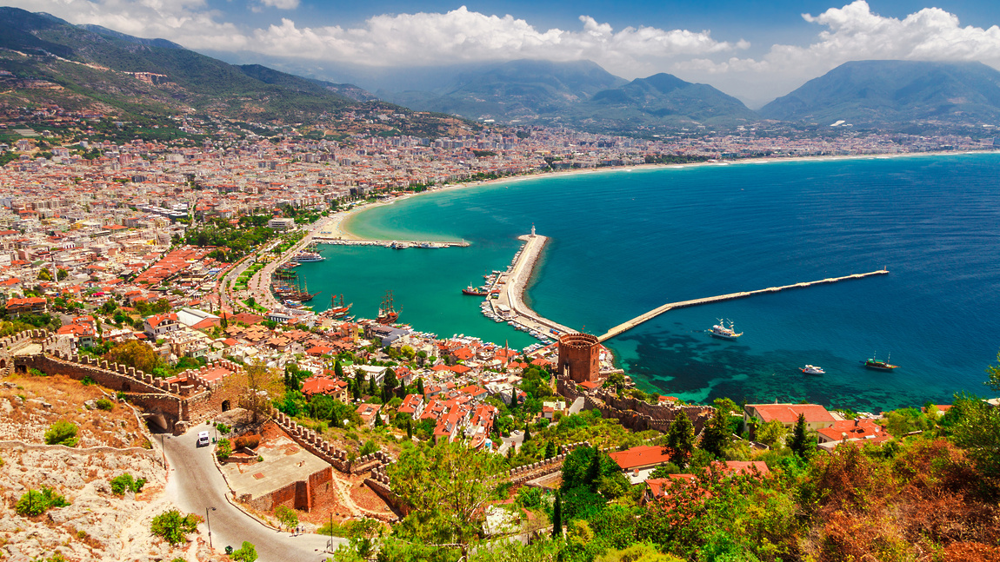
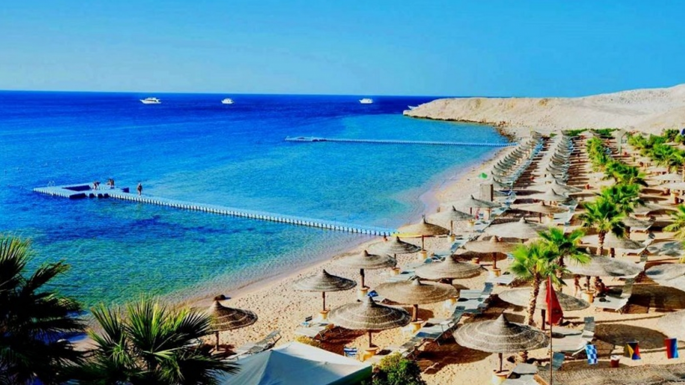

Турция

Турция, официально Туре́цкая Респу́блика — государство, расположенное главным образом в Передней
Азии и частично (около
3 % территории, 20 % населения) — в Южной Европе (Восточная Фракия). Население — 79,4 млн чел.
(2016
год), площадь
территории — 783 562 км² (занимает 18-е место в мире по численности населения и 36-е по
территории).
Государственный
язык — турецкий.
Египет

государство, расположенное в Северной Африке и на Синайском полуострове Азии и являющееся
поэтому страной двух материков.
На северо-востоке граничит с Израилем и частично признанным государством Палестина, на
юге — с Суданом, на западе — с Ливией. На севере территория страны омывается
водами Средиземного, на востоке — Красного морей, при этом оба моря соединены посредством
искусственно сооружённого Суэцкого канала.
Чехия
государство в Центральной Европе. Граничит с Польшей на севере (длина границы 658
км), Германией — на северо-западе и западе (646 км), Австрией — на юге (362 км)
и Словакией — на востоке (214 км). Общая протяжённость границы — 1880 км.
Столица Прага — туристическая достопримечательность и крупнейший город страны. Современная
Чехия образовалась в результате распада Чехословакии (Бархатный развод) 1 января 1993 года.
Страна включает исторические области — Богемию, Моравию и часть Силезии. С 12 марта 1999
года Чехия — член НАТО, с 1 мая 2004 года — член Европейского союза.
Великобритания

Соединённое Короле́вств, полная официальная форма — Соединённое Королевство
Великобрита́нии и Се́верной Ирла́ндии — островное государство на северо-западе
от континентальной Европы.